2022年4月より、東京FMにて「SDGs学部 ミライコード」が始まりました。このページは番組の中で触れた話題へのリンクや出演者の 「ミライコード」を発信しています。
第１回 「無意識のジェンダー・バイアスを問うクイズで大盛り上がり」 (2022年4月3日)

第2回 「政治における男女格差がとくに大きい日本・・・なぜ？」 (2022年4月10日)
- 出演者：辻由希 (政治経済学部政治学科・教授)、 小川裕子 (政治経済学部政治学科・教授)
- 今朝のミライコード：「他人の足を引っ張るな、気になるなら一緒に走ったほうが絶対おもしろい」
- 放送をお聞きになりたい方はこちらから
- 参考リンク
第３回 「リサイクルうまく回っている？」 (2022年4月17日)
- 出演者：山本雅資 (政治経済学部経済学科・教授)
- 今朝のミライコード：「いろんな角度で見てみよう」
- 放送をお聞きになりたい方はこちらから
- 参考リンク
- PETボトルリサイクル推進協議会「日米欧のリサイクル状況比較」.
- 環境省「SUSTAINABLE FASHION: これからのファッションを持続可能に」
- (オオカミと鹿の話の出典) Raynor, J., Grainger, A. and D. Parker (2021) “Wolves Make Roadways Safer, Generating Large Economic Returns to Predator Conservation,” PNAS, 118 (22) e2023251118.
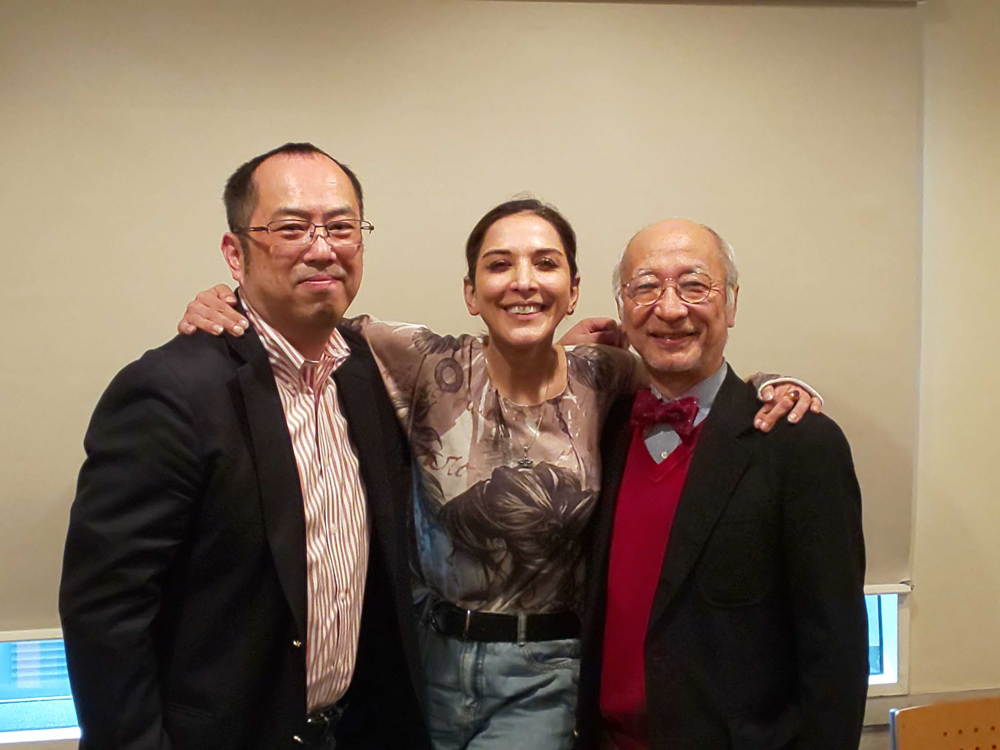
第４回 「変わる、リサイクル、ついていけてる？」 (2022年4月24日)
第５回 「全ての子供が学べるのは当たり前の事」 (2022年5月1日)
- 出演者：小貫大輔 (国際学部国際学科・教授)
- 今朝のミライコード：「教育は子どもを箱に入れるためでなく、翼を与えるために」
- 放送をお聞きになりたい方はこちらから
- 参考リンク
- 「彩とりどりの子どもたち」報告書 （開くと自動的にダウンロードされます）.
- 文部科学省「CLARINETへようこそ」.
- 文部科学省「かすたねっと」.
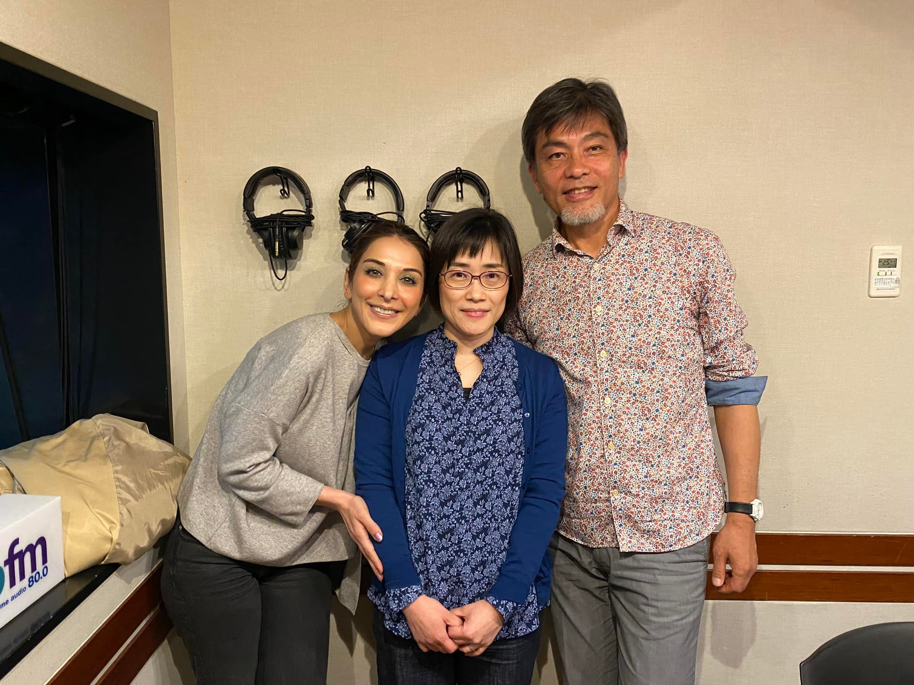
第6回 「公立学校で学ぶ外国ルーツの子どもたち」 (2022年5月8日)
第7回 「パートナーシップについて考えよう！」 (2022年5月15日)
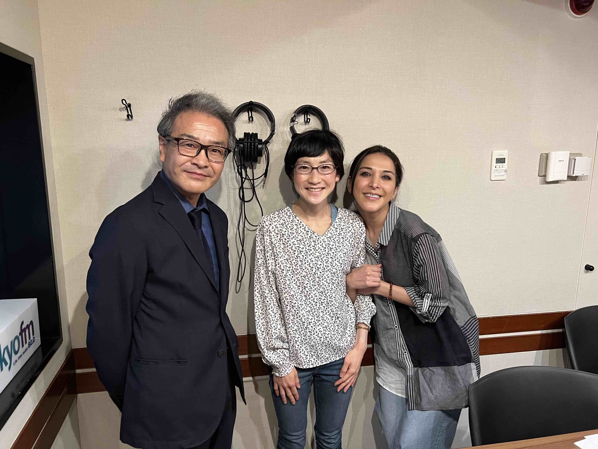
第8回 「スポーツとSDGsについて考えてみよう」 (2022年5月22日)
第9回 「熱から音が作れるって、知ってた？」 (2022年5月29日)
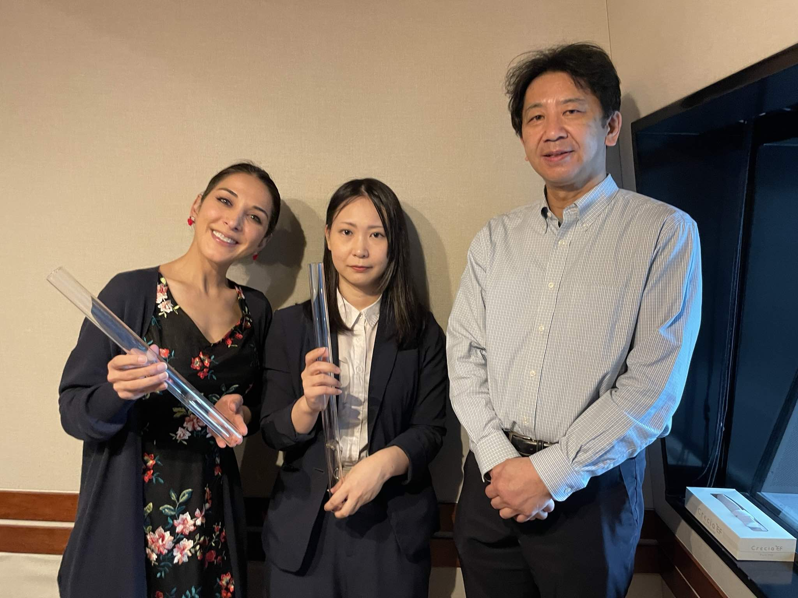
第10回 「エネルギーを上手に使おう！」 (2022年6月5日)
- 出演者：木村英樹 (工学研究科・電気電子工学専攻教授)
- 今朝のミライコード：「スピードを上げると効率が悪い、スローライフのすすめ」
- 放送をお聞きになりたい方はこちらから
- 参考リンク
第11回 「助けてもらうのは恥ずかしいことじゃない！」 (2022年6月12日)
- 出演者：高橋亜美 (社会福祉法人 子供の家 ゆずりは所長)
- 今朝のミライコード：「生きていてくれて、ありがとう。」
- 放送をお聞きになりたい方はこちらから
第12回 「これからの支援のあり方について考えよう」 (2022年6月19日)
- 出演者：大空幸星 ( NPO法人あなたのいばしょ理事長)
- 今朝のミライコード：「誰もが支援者になれる」
- 放送をお聞きになりたい方はこちらから
第13回 「災害とSNS」 (2022年6月26日)
- 出演者：内田理 (情報理工学部情報メディア学科教授)
- 今朝のミライコード：「災害を自分事として考える。それが防災で一番大切なこと！」
- 放送をお聞きになりたい方はこちらから
- 参考リンク
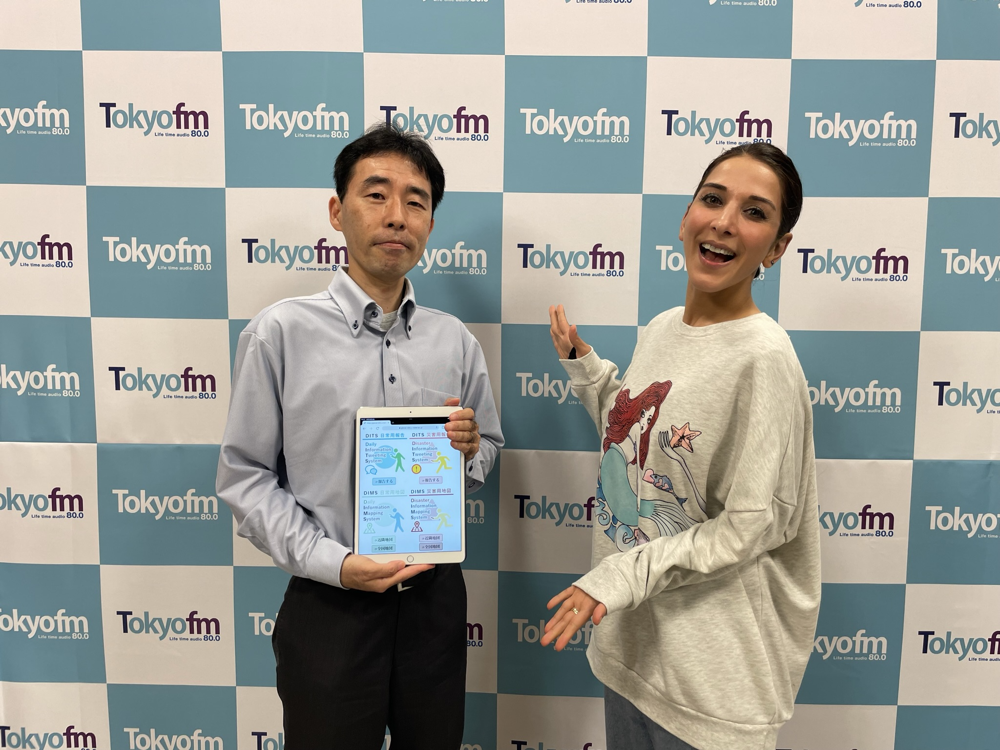
第14回 「旅するSDGs」 (2022年7月3日)
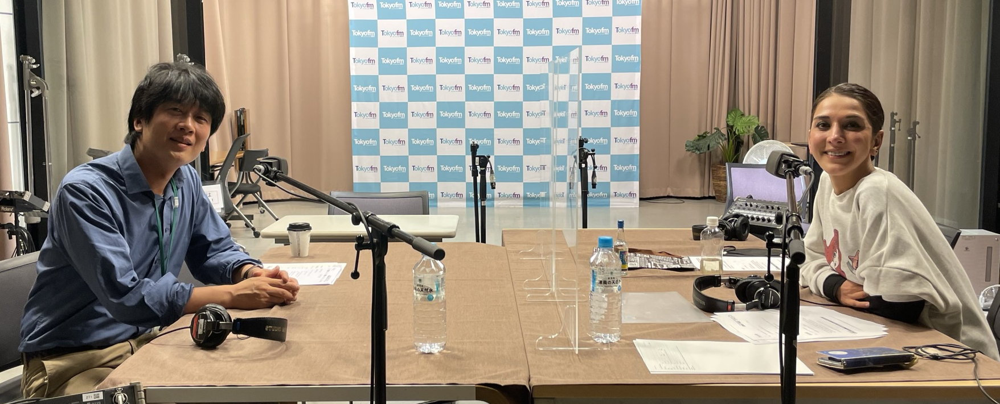
第15回 「海の豊かさを感じたい」 (2022年7月10日)
- 出演者：仁木将人 (海洋学部海洋理工学科教授)
- 今朝のミライコード：「海を豊かさを私たちがつくろう」
- 放送をお聞きになりたい方はこちらから
- 参考リンク
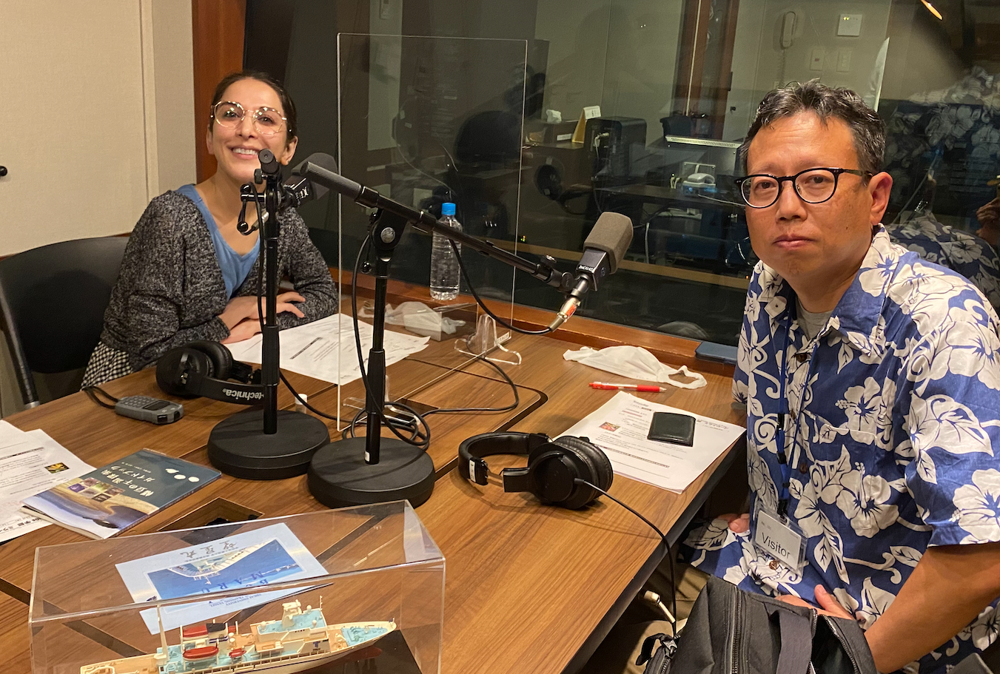
第16回 「世界の鉄道ビジネスの中に探すSDGs」 (2022年7月17日)
第17回 「小さな虫が教えてくれる健康のヒント」 (2022年7月24日)
- 出演者：安田佳代 (健康学部・健康マネジメント学科教授)
- 今朝のミライコード：「小さな気づき・関心からアクションしてみよう」
- 放送をお聞きになりたい方はこちらから
- 参考リンク
- 「アンチエイジングの教科書」 (石井直明著、2021年)
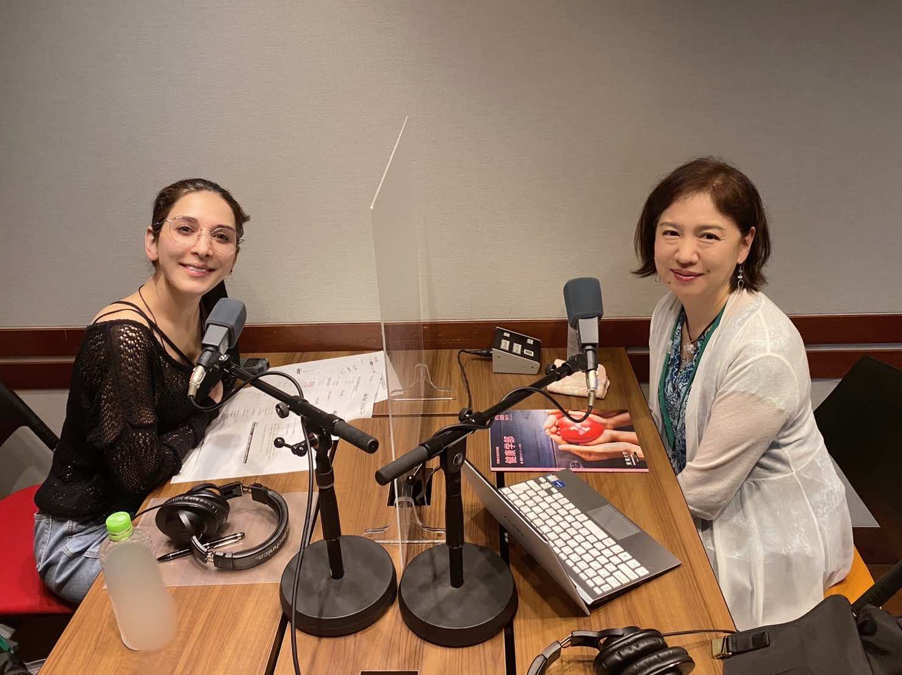
第18回 「乳酸菌と発酵食品を知って健康になろう」 (2022年7月31日)
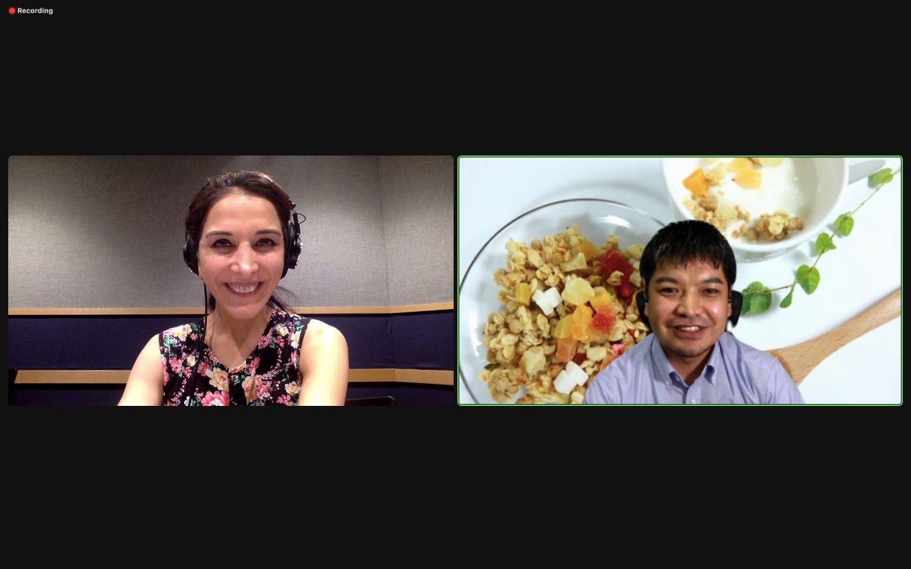
第19回 「現役大学生と話そう (1)」 (2022年8月7日)
- 出演者：大石桃加 (国際学部4年)、 大嶋巧 (健康学部3年)、
- 今朝のミライコード：大石桃香 「思ったら行動」、大島巧 「興味があったらベイジョ（メリーガ）に来て」
- 放送をお聞きになりたい方はこちらから
- 参考リンク
- Beijo Me Ligaのウェブサイト
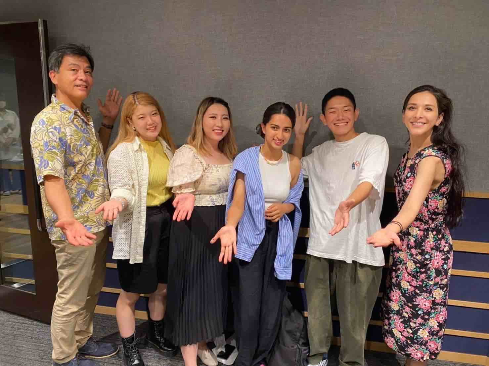
第20回 「現役大学生と話そう (2)」 (2022年8月14日)
- 出演者：アカンドユキ (国際学部2年)、 山﨑綾音 (国際学部2年)、
- 今朝のミライコード：山崎綾音 「他人事じゃなくて自分ごと」、アカンドユキ「１自分らしく生きる、２記憶に残る人生にする」
- 放送をお聞きになりたい方はこちらから
第21回 「外国人の子供たちが自由に学べる社会に」 (2022年8月21日)
- 出演者：小原ブラス (タレント・コラムニスト)
- 今朝のミライコード：「自分が一番は恥ずかしいことじゃない！」
- 放送をお聞きになりたい方はこちらから
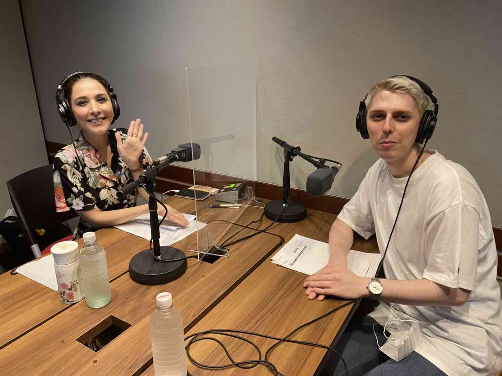
第22回 「10代20代の生きづらさを抱える女の子のための女性による支援」 (2022年8月28日)
- 出演者：橘ジュン (Bond プロジェクト 代表) / 多田憲二郎 (同 統括責任者)
- 今朝のミライコード：「1人じゃないよ」
- 放送をお聞きになりたい方はこちらから
- 参考リンク
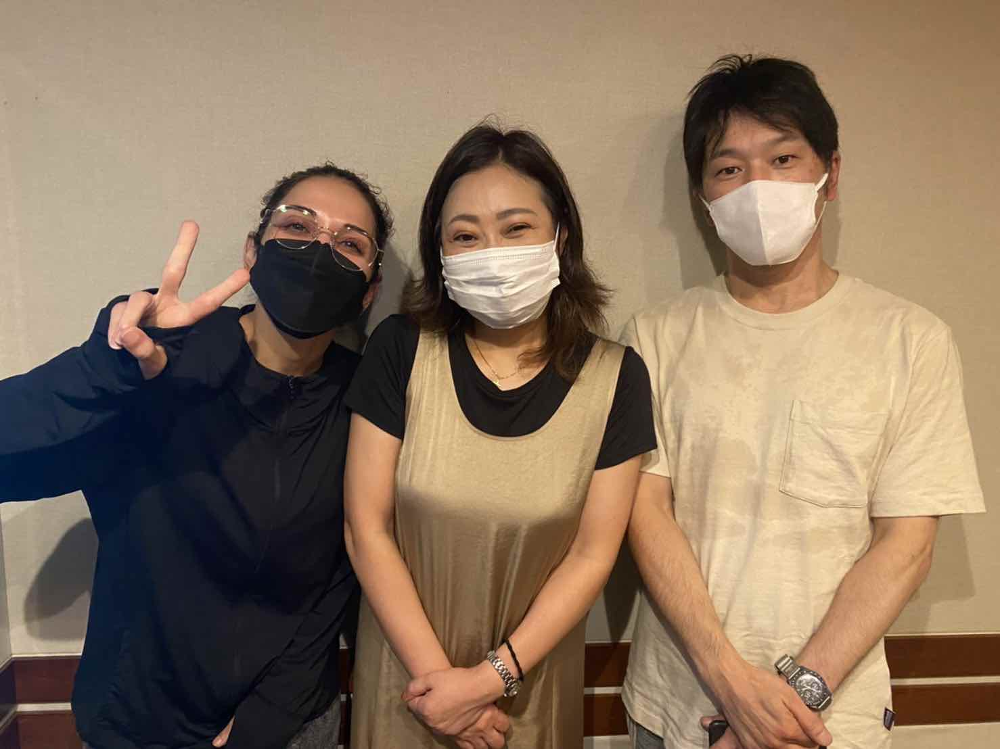
第23回 「NPOの国際協力活動について」 (2022年9月4日)
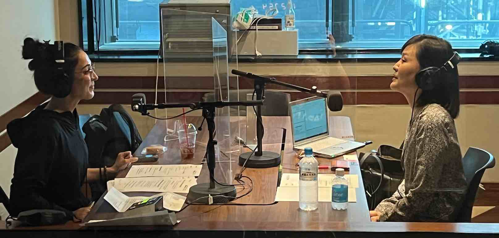
第24回 「車椅子をポジティブに」 (2022年9月11日)
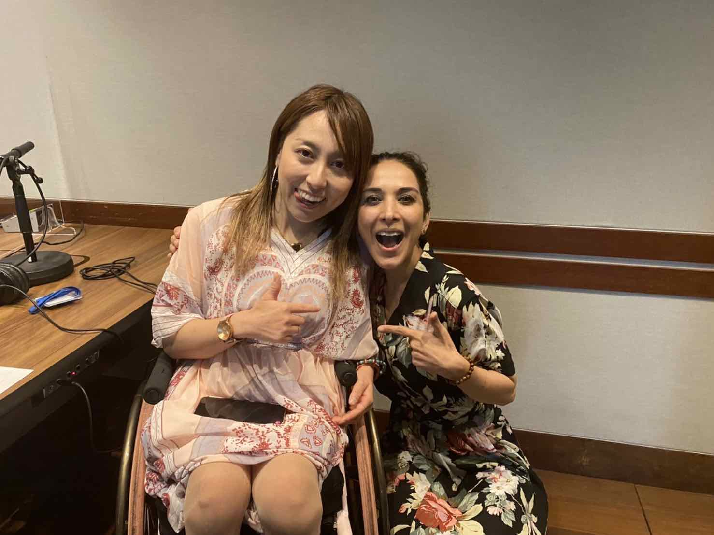
第25回 「海の変化から未来が見える」 (2022年9月18日)
- 出演者：大泉 宏 (海洋学部 海洋生物学科 教授)
- 今朝のミライコード：「身近な自然を再発見しよう」
- 放送をお聞きになりたい方はこちらから
- 参考リンク
- 出演者：中村 雅子 (東海大学 海洋学部水産学科 准教授)
- 今朝のミライコード：「まずは、海へジャンプイン！」
- 放送をお聞きになりたい方はこちらから
- 参考リンク
- 出演者：前田 秀一 (東海大学 情報理工学部情報メディア学科 教授)
- 今朝のミライコード：「ローマ（研究・問題解決・発見・成功…）は一日にしてならず！」
- 放送をお聞きになりたい方はこちらから
- 参考リンク
- 出演者：成田 正敬 (東海大学 工学部機械システム工学科 講師)
- 今朝のミライコード：「ゆらぎを楽しもう！」
- 放送をお聞きになりたい方はこちらから
- 参考リンク
- 番組で紹介した1/ｆの内容についての論文 (Calculation of 1/f Fluctuation from Sound Signal and Comfort Evaluation)
- 番組中に流したJ.S.Bach作曲 無伴奏チェロ組曲第１番（BWV1007）1.プレリュード( 1人目：Maja Weberと 2人目：Paul Tortelier, 演奏動画)
- リクエストで流した曲: SHIN-ON-GAK 新音楽制作工房
- 出演者：二ノ宮リム さち (東海大学 スチューデントアチーブメントセンター 准教授)
- 今朝のミライコード：「衝突は変化への入り口」
- 放送をお聞きになりたい方はこちらから
- 参考リンク
- ESDとは(特定非営利活動法人持続可能な開発のための教育推進会議(ESD-J))
- SDGsとESDについて（ユネスコ未来共創プラットフォーム）
- NVCとは（NVC Japan）
- 東海大学のパブリックアチーブメント（PA）型教育
- 持続可能でレジリエントな世界と教育・学習について考える～二ノ宮リムさち研究紹介サイト
- 二ノ宮リムさちによるエッセイ「は？SDGs？」（東海大学新聞WEB版）
- 【環境教育・ESDトーク】＃06 二ノ宮リムさち「わくわく」「怒り」「自分ごと」～公正な「対話」で 世界を変革する（Youtube環境省チャンネル）
- インタビューシリーズ「研究と教育実践―最前線」二ノ宮リムさち （Youtube日本環境教育学会チャンネル）
- 出演者：藤本祐司 (観光学部 観光学科・教授)
- 今朝のミライコード：「リジェネラティブ・ツーリズム」
- 放送をお聞きになりたい方はこちらから
- 参考リンク
- 松本市公式観光情報 新まつもと物語
- 黒川温泉公式サイト
- 児島ジーンズストリート
- リジェネラティヴ・ツーリズムに関する参考サイト(その１、 その２)
- 出演者：西田竜也 (政治経済学部 政治学科・教授)
- 今朝のミライコード：「TCA (Tolerance: 寛容、 Courage: 勇気、 Action: 行動）」
- 放送をお聞きになりたい方はこちらから
- 参考リンク
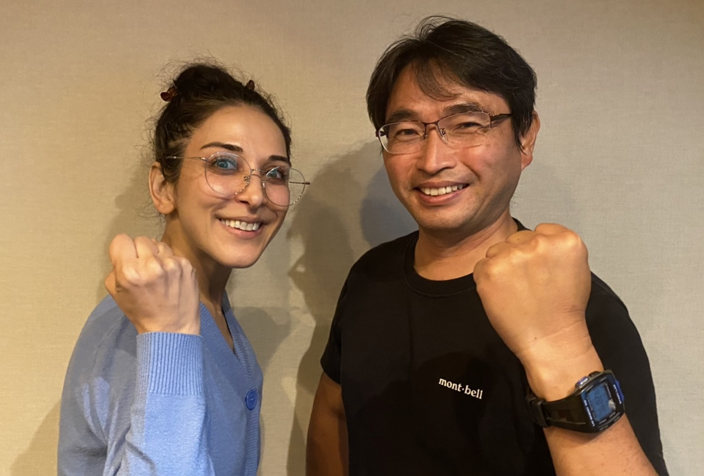
第26回 「好きから始まる英語学習」 (2022年9月25日)
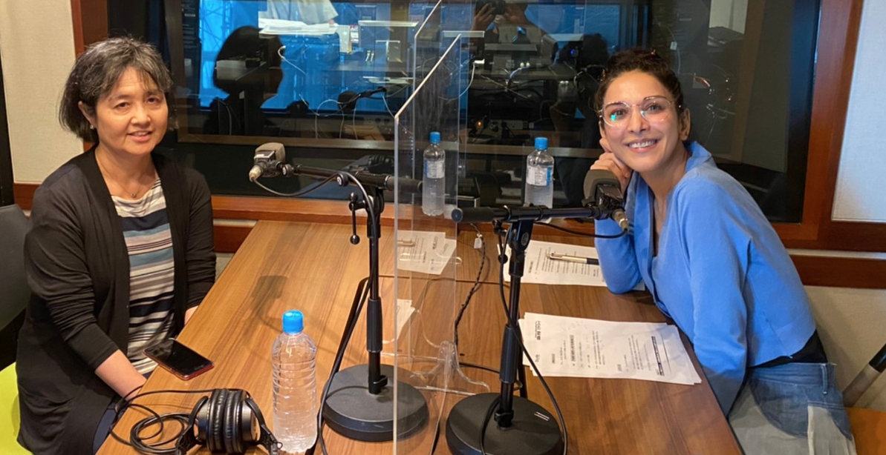
第27回 「やさしい日本語でグローバル社会へ」 (2022年10月2日)
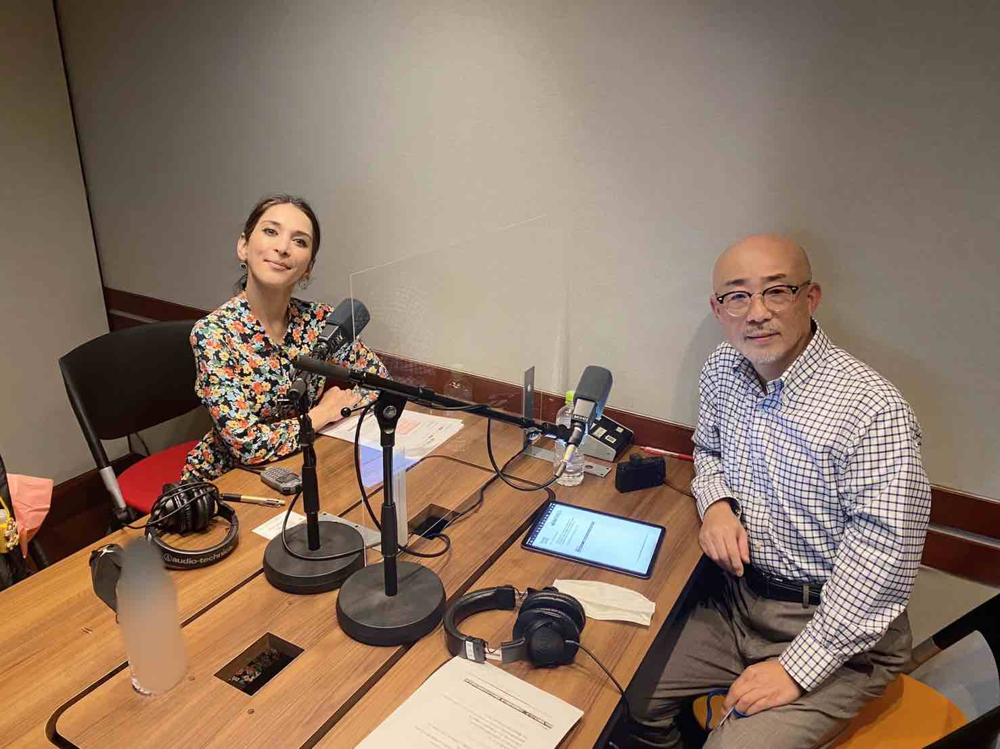
第28回 「猫も人間も幸せな島」 (2022年10月9日)
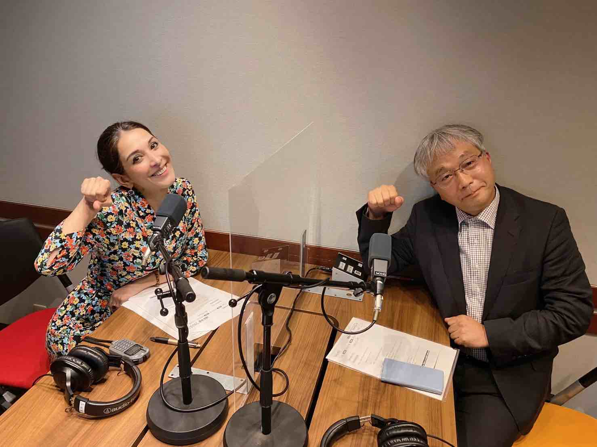
第29回 「ルーツとなる国を離れて暮らす子供たちの教育について その1(デンマーク、ポーランド他)」 (2022年10月16日)
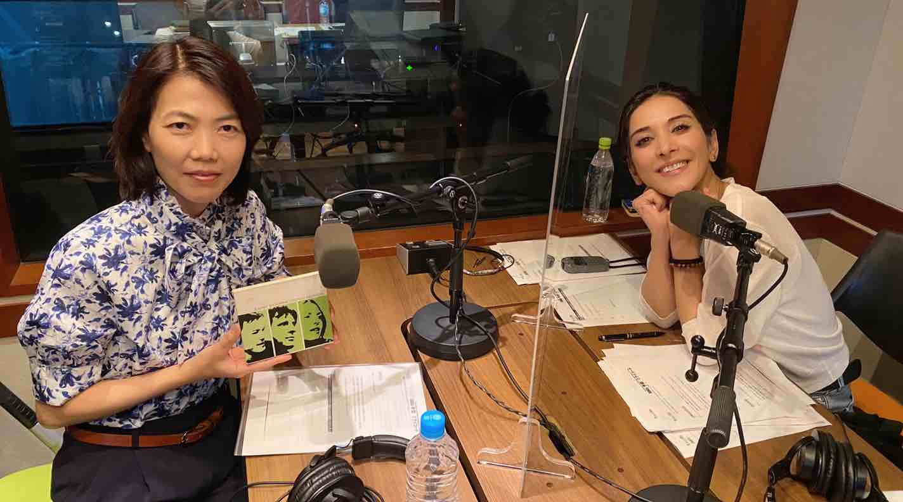
第30回 「ルーツとなる国を離れて暮らす子供たちの教育について その2 (イギリス、フランス)」 (2022年10月23日)
第31回 「減少しつつある珊瑚の保全」 (2022年10月30日)
研究拠点とさせていただいいる研究所・場所の紹介
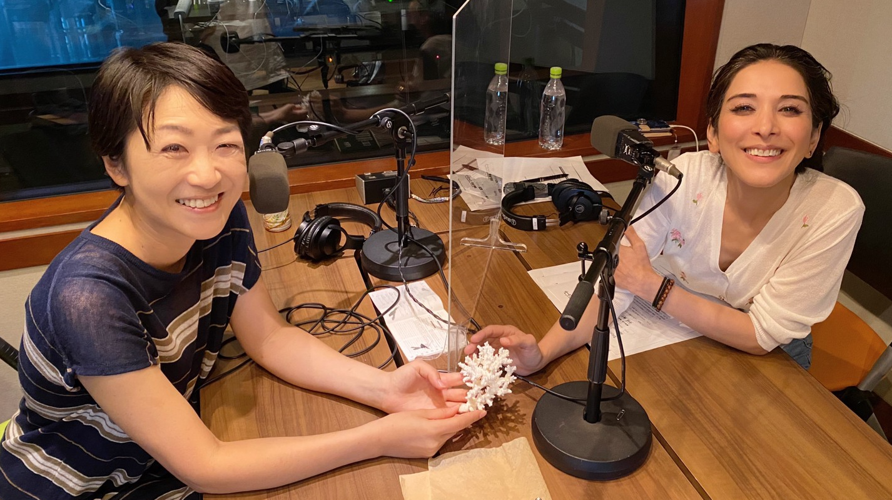
第32回 「カーボンプライシングを通して環境とお金について知る」 (2022年11月06日)
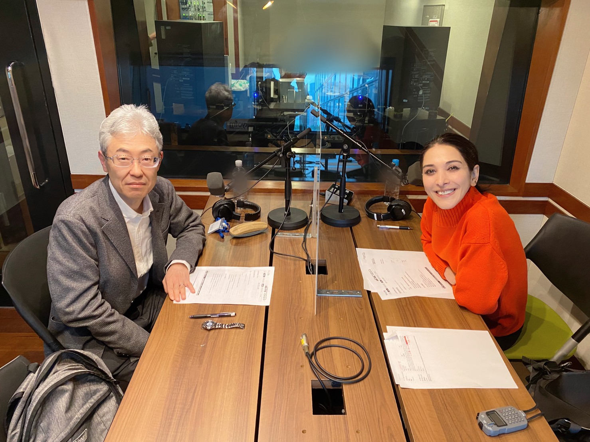
第33回 「プラスチックごみと環境問題」 (2022年11月13日)
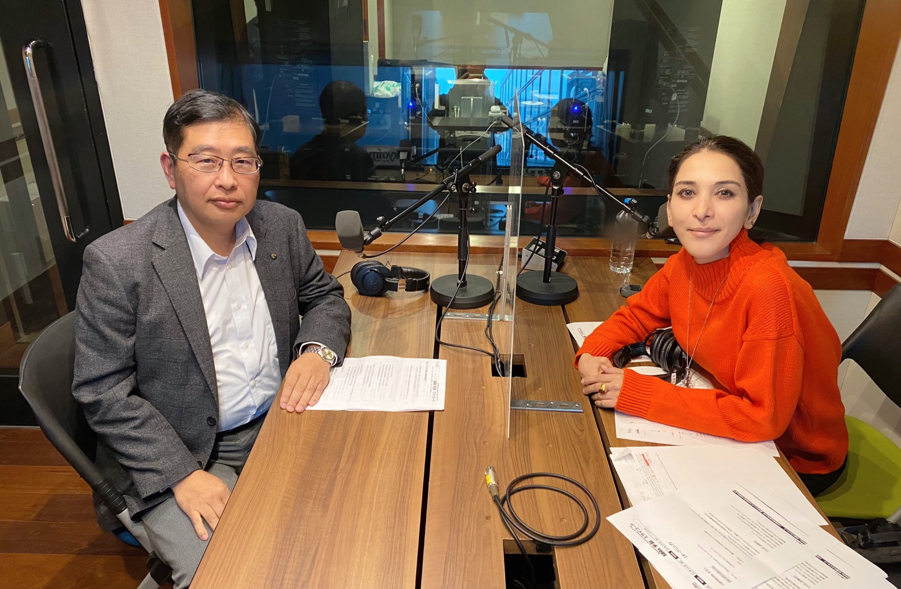
第34回 「クルマの中の音（車内音）」 (2022年11月20日)
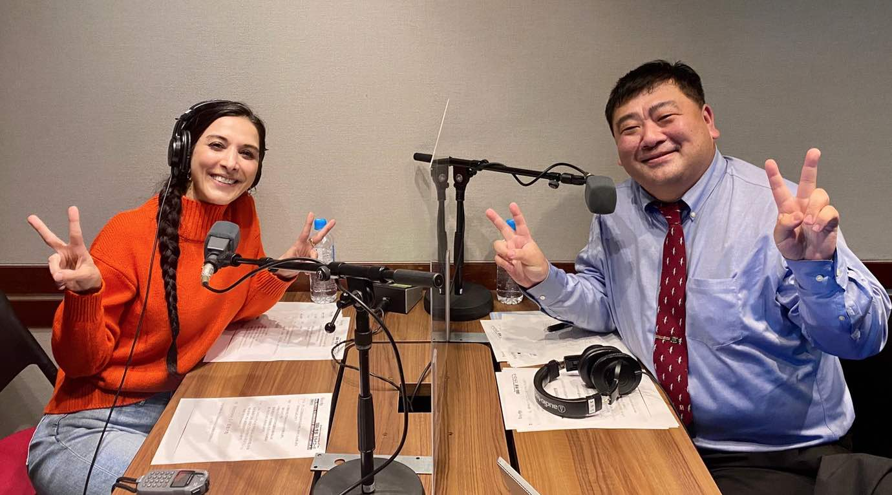
第35回 「水を使って資源や環境を守る〜マングローブの研究調査でわかること〜」 (2022年11月27日)
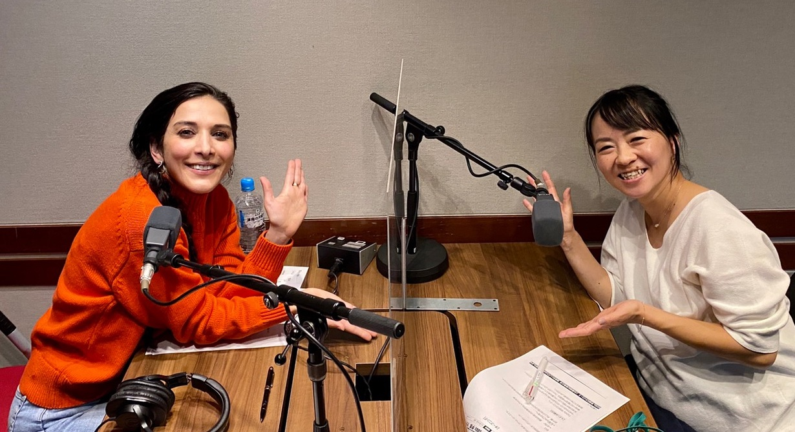
第36回 「立場の違う人との対話について考えよう」 (2022年12月04日)
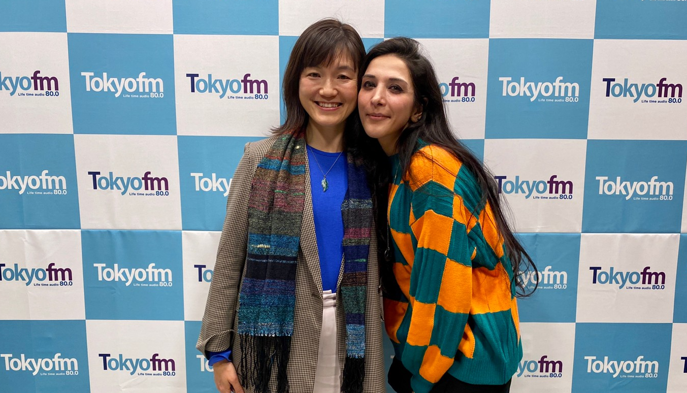
第37回 「生活の中で活きる行動経済学」 (2022年12月11日)
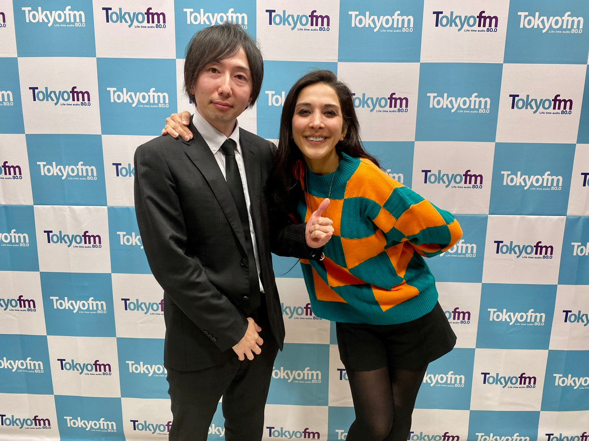
第38回 「幸せになるためのやり抜く力」 (2022年12月18日)
第39回 「誰一人取り残さない～難民の方々との交流や被災地でのボランティア活動」 (2022年12月25日)
第40回 「世界を変える水素エネルギーとエシカルファッション」 (2023年1月1日)
第41回 「SDGs=環境ではない、誰ひとり取り残さない事も大切」 (2023年1月8日)
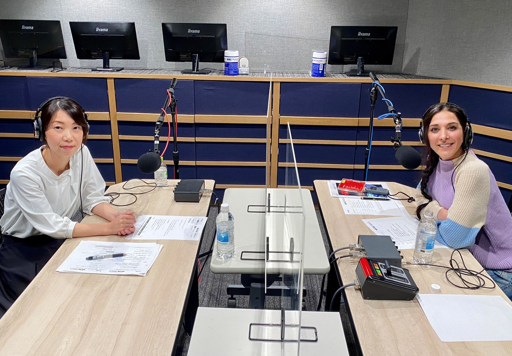
第42回 「旅のカタチも社会の変化にあわせて変わる」 (2023年1月15日)
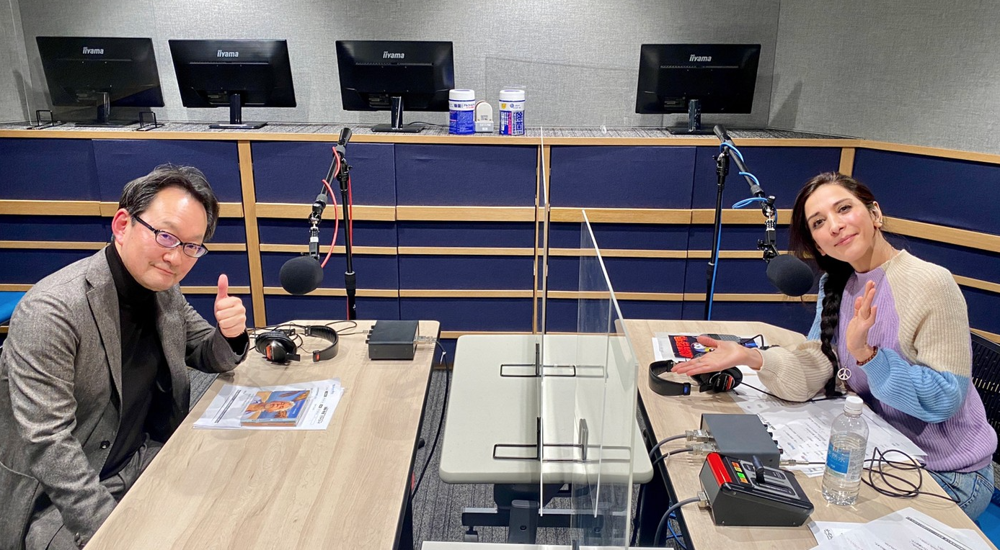
第43回 「今、気になる国際情勢と外交について - ウクライナ情勢の今について知りたい -」 (2023年1月22日)
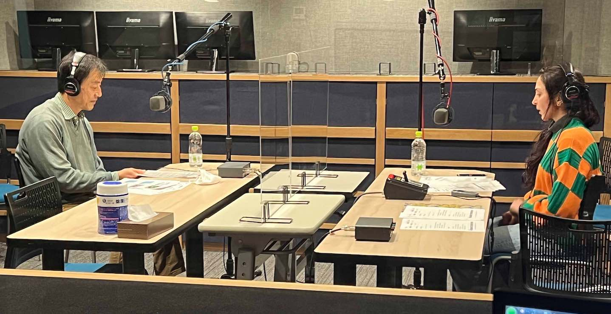